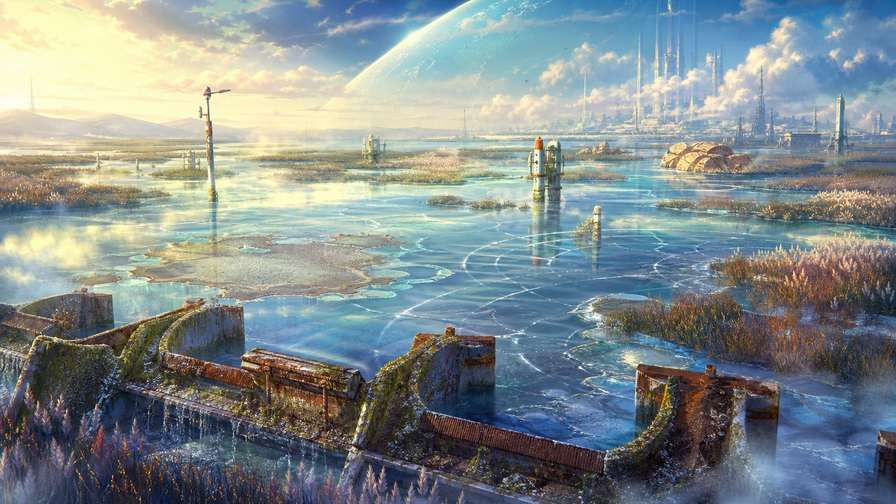
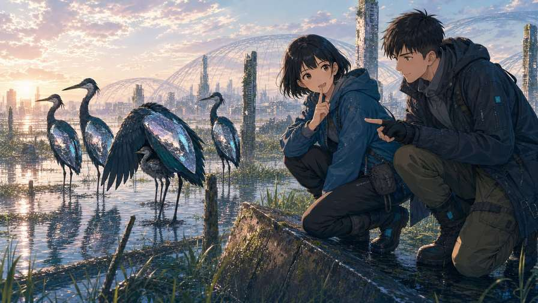

棲地漫遊圖鑑
沿著 14 個大領域慢慢旅行，一站一站把圖鑑點亮的收集型漫遊。
核心循環
- 抵達一站：探索圖開場，進入總結圖的定點畫面
- 在畫面裡找物種，輕點記錄進圖鑑
- 用呼吸節奏的小互動，把該站失衡的節律調回來
- 得到一張明信片，地圖點亮一站
素材現況
已齊：12 個子領域的地理圖 24 張、24 支定點影片、65+ 物種圖文、每站任務起因。待補：第 13 站總結圖、環境音景。
新巴比倫 · 遊戲企劃試玩
三個企劃版本都以同一個世界為舞台：AI 觀察員沿著棲地旅行，看定點畫面、記錄物種、把失衡的節律調回來——沒有戰鬥、沒有計時、沒有失敗。下面把三份企劃記錄下來，每一份都附一個可以真的動手玩的試玩版，玩完再決定要往哪個方向做。
沿著 14 個大領域慢慢旅行，一站一站把圖鑑點亮的收集型漫遊。
已齊：12 個子領域的地理圖 24 張、24 支定點影片、65+ 物種圖文、每站任務起因。待補：第 13 站總結圖、環境音景。
不做任務、不做圖鑑——選一個棲地，手機裡就多一扇活著的窗。
已齊：定點影片與地理圖可直接輪播。待補：環境音景（這個版本最吃聲音）、時段色調。
每一站的任務起因寫成一小段故事，方與 K 的遠端對話推進劇情。
已齊：每站任務起因、《K 的狩獵日誌》逐日紀錄可改編。待補：每站一段短劇本（寫作量最大）。
| A · 棲地漫遊圖鑑 | B · 異世界定點直播 | C · 節律修復之旅 | |
|---|---|---|---|
| 一次遊玩 | 5–10 分鐘走完一站 | 打開就放著，幾分鐘到幾小時 | 3–5 分鐘讀完一站故事 |
| 療癒感來源 | 收集與點亮的滿足 | 純粹的陪伴與環境感 | 故事與角色的情感 |
| 留存機制 | 圖鑑進度、每週新子領域 | 弱——靠習慣與想念 | 追劇式等待下一站 |
| 開發量 | 中（外殼＋收集系統） | 最小（播放器即可） | 中（外殼小、劇本量大） |
三個版本都在下面這支「手機」裡真的能玩。切換版本不會互相影響，各自玩各自的進度（進度只留在這次開啟裡，關掉就重來，方便你反覆比較手感）。

溫哥華穹頂西南側的淹沒舊海岸——穹頂暖濕排氣、海水倒灌、舊潮閘洩壓與沉沒金屬結構，在這裡形成一片低頻共鳴的濕地。外環維修站收到異常低頻回波：防洪閘開始錯判潮位。
物種都記錄到了，但濕地的節律還是亂的——防洪閘把沉鐘囊蛙群的鳴聲誤認成潮汐。跟著呼吸，把自己的節奏放慢，讓閘門重新聽見真正的潮。
溫哥華穹頂西南 · 淹沒舊海岸
五個物種，一道錯判潮位的閘門，和一頭把潮線推回原位的鯨。
—— K 的狩獵日誌，第壹週
正式版進度：12 站素材齊備，沿大領域一站一站解鎖；第 13 站雲梯讓道礦廊建置中（目前只有探索圖與物種資料）。

「看懂之前，腳步要比好奇心慢一點。」—— K
頻道
時段（同一片棲地，不同的光）
這個版本沒有要你做任何事。物種觀察卡會自己浮現、自己離開；正式版會換上定點影片並補上環境音景——風、水、遠處的蛙鳴。
跟著沉鐘的節奏：圓環擴散到虛線圈的那一刻，按下「沉鐘」。
不急。錯過了，就等下一聲。